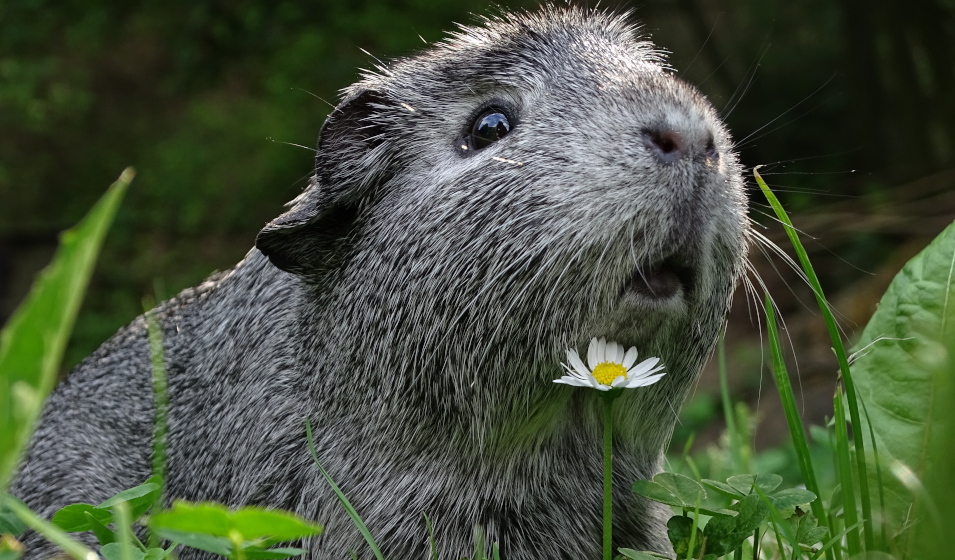
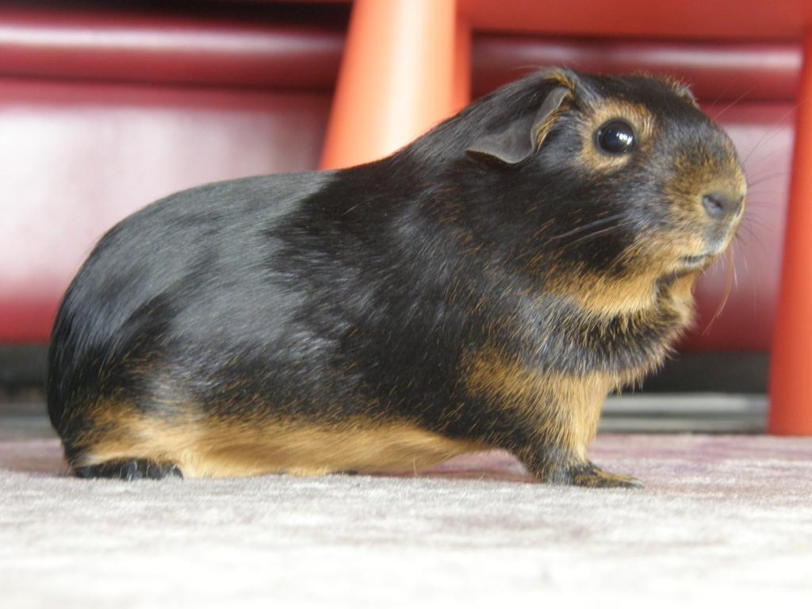
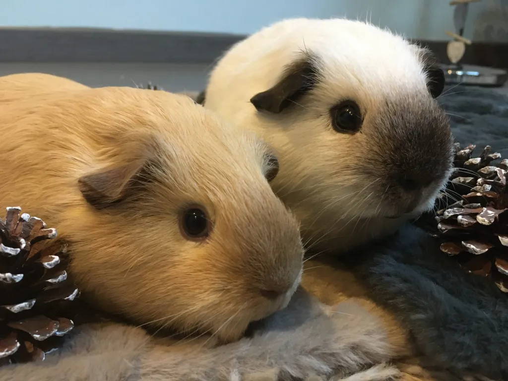
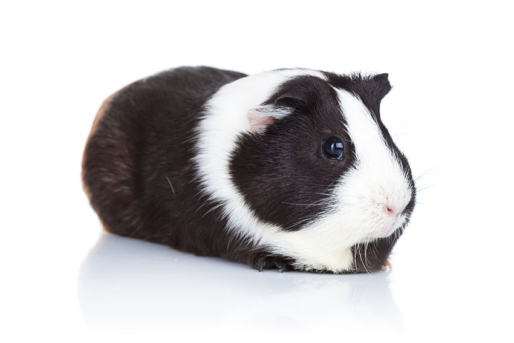
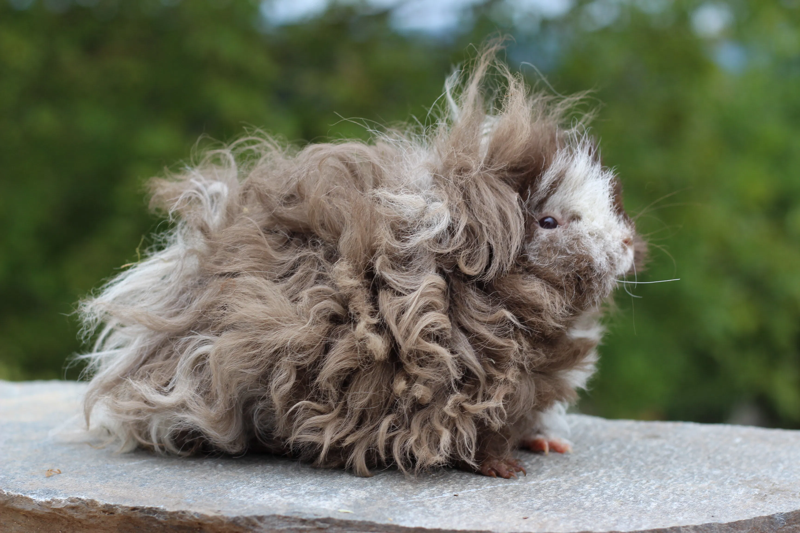
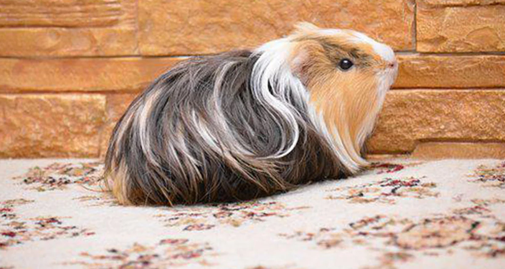
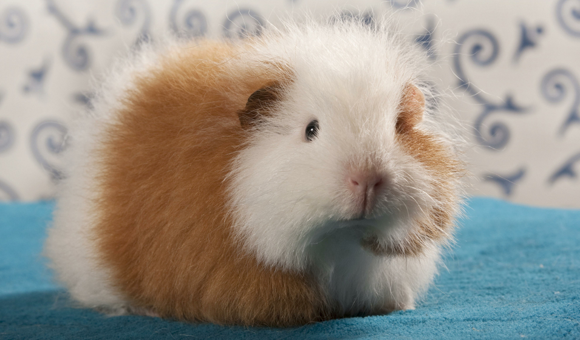

Qu'est ce c'est un chon ?
Un cochon d'inde ou cobaye domestiqué sont ces petites boules de poils adorables d'environ 1kilo et demi (sauf Chon qui est un peu plus gros mais c'est parce qu'il est bien nourrit🐹🥰). Le cochon d'inde appartient à la grande famille des rongeurs qui comprend également les rats, les souris, les hamters ou encore les chinchillas. Tous les rongeurs ont cette caractéristique commune : de longues incisives qui poussent continuellement. L'animal les utilise pour ronger et briser les aliments. Mais il peut également s'en servir pour déchiquetter des vêtements ou grignoter des meubles.
Pourquoi en adopter ?
Adopter des cochons d'inde offre une compagnie douce et affectueuse, idéale pour les enfants comme les adultes. Ils sont faciles à entretenir, très calins et certains sont presque intelligents ce qui vous permet de leur apprendre plein de tour si vous en avez l'envie. Il est préférable d'avoir toujours 2 cochons d'Inde simultanément car ils ont besoin de beaucoup de compagnie, cela ne vous empèche pas de leur faire des calins quand vous le souhaitez. 🥰
Les cochons d'inde à poils courts
Au sein de la race des cochons d'inde à poils courts, on peut distinguer différents coloris à savoir :
Agouti
L'agouti est une variété non unicolore et ticketée dont la caractéristique principale est son ticking (c'est à dire que les poils sont zonés, ce qui donne cet effet marbé).
Feu
Le feu est un cochon d'inde à poils lisse, essentiellement unicolore avec quelques marques spécifiques de couleurs fauve. On retrouve ces marques sur la tête (autour des yeux, des oreilles et des narines), sur la poitrine et sur le ventre
Himalayen
L'himalayen est une variété à plusieurs couleurs dont la caractéristique principale est son marquage et sa distribution sur le corps du cochon d'Inde. En fait l'himalayen est un cochon d'Inde albinos qui développe des pigments sur le nez, les oreilles et les pattes
Hollandais
L'hollandais est une variété à dessin. Ils ont généralement de couleur unie avec des dessins de couleur blanches sur la tête et la poitrine.
Les cochons d'inde à poils longs
Au sein de la race des cochons d'inde à poils longs, on peut distinguer différents type de poils :
Lunkarya
Le lunkarya est un cochon d'inde au poil très rêche, dont la fourrure possède 2 rosettes comme les péruviens mais avec le poil orienté vers le haut ce qui lui donne cette allure si particulière.
Péruvien
Le péruvien porte une raie sur le milieu et deux petites rosettes sur sa croupe rejettent les poils vers l'avant. Ce cochon d'inde nécessite donc d'être coiffé. Sa fourrure est dense et soyeuse.
Teddy suisse
Le teddy suisse aussi appelé CH-teddy a le poil dur, il n'a aucune rosette. Les poils de sont ventres et de ses pattes sont bouclés et il a une fourrure d'une densité régulière.